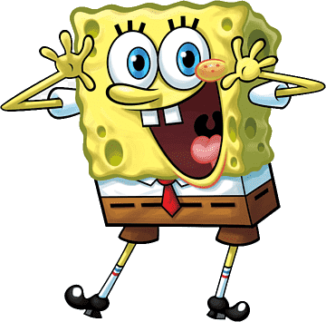
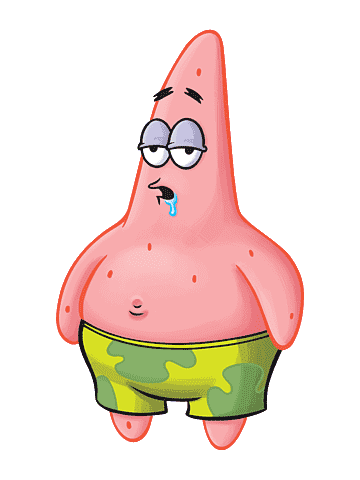
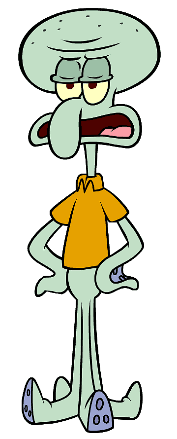
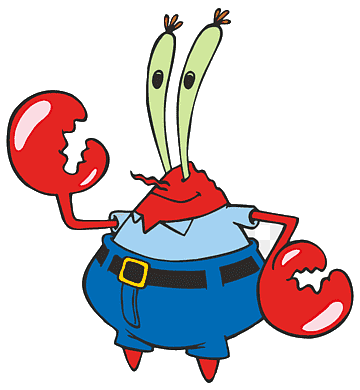
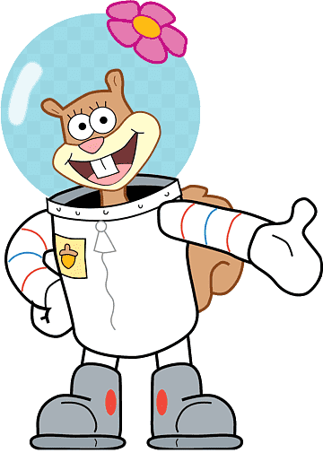
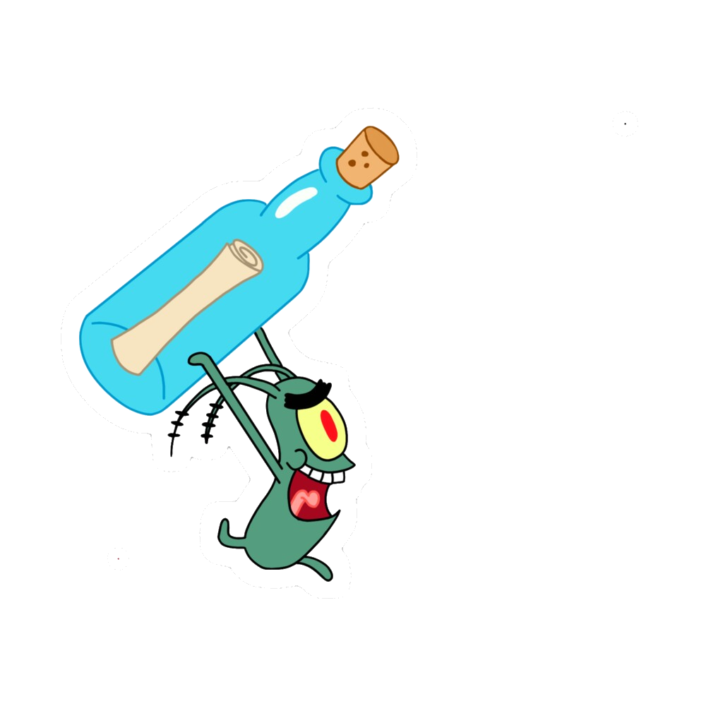

-
Bob Esponja
Descrição
Bob Esponja é uma esponja marinha bondosa, otimista, alegre, ingênua e amigável que mora na cidade submarina da Fenda do Biquíni juntamente com diversas criaturas antropomórficas.
-
Patrick
Descrição
Patrick é o melhor amigo "ignorante", mas muito bem-humorado de Bob Esponja. Ele é retratado como uma estrela do mar rosa com sobrepeso, que serve como o idiota da cidade subaquática de Fenda do Bikini. Patrick fica mais burro ao longo da série e tem demonstrado cometer muitos erros ridículos.
-
Lula Molusco
Descrição
É negativo ao extremo, sua voz é anasalada, anda sempre entediado e possui manias excêntricas. Acredita que todos à sua volta são insuportáveis, principalmente seu vizinho Bob Esponja que está sempre alegre e seu amigo Patrick Estrela que o considera lerdo demais.
-
Sirigueijo
Descrição
O Seu Sirigueijo é extremamente ganancioso, folgado, egoísta, sovina e literalmente obcecado por dinheiro.
-
Sandy
Descrição
Sandy é geralmente gentil e atenciosa com Bob Esponja e é conhecida por ajudá-lo quando ele está se sentindo perdido. No entanto, em episódios mais antigos, ela se mostra muito mais louca.
-
Plankton
Descrição
Esse miúdo vilão de personalidade arrogante, tenta roubar, a todo custo, a receita secreta do hambúrguer de siri, propriedade do Seu Sirigueijo. Plankton, apesar de reiteradas tentativas, nada conseguiu.